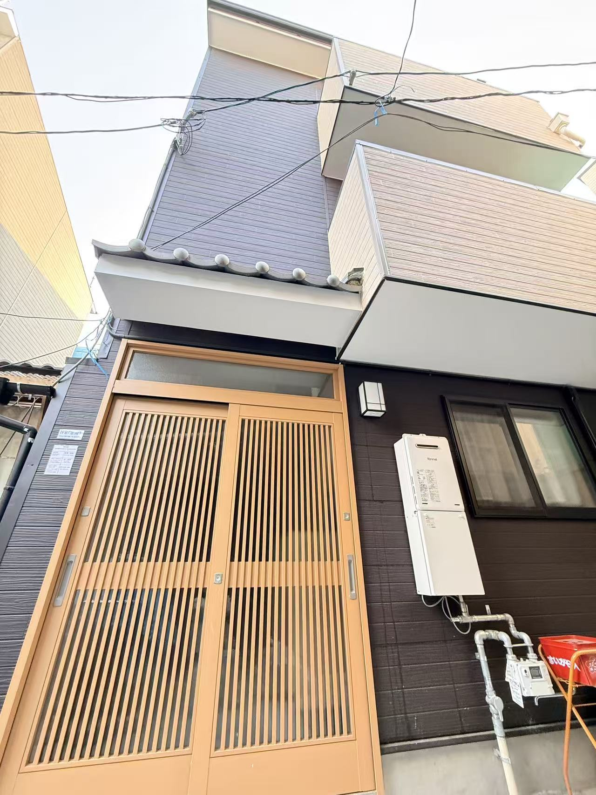
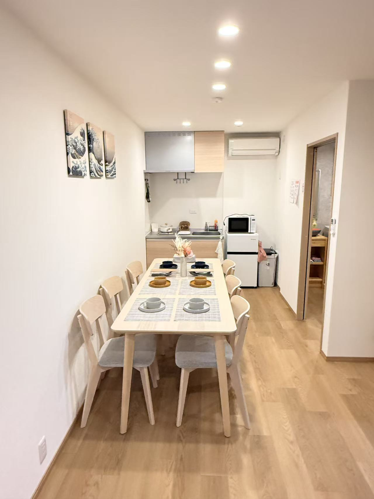
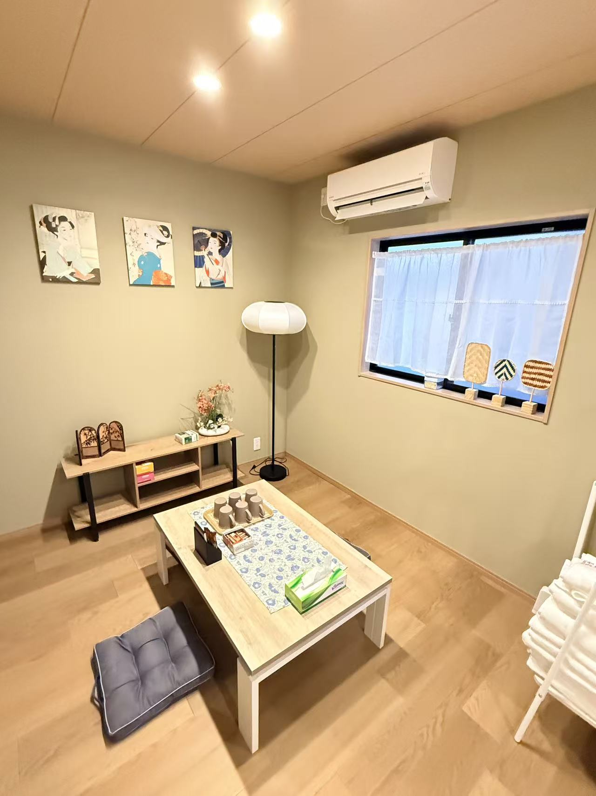
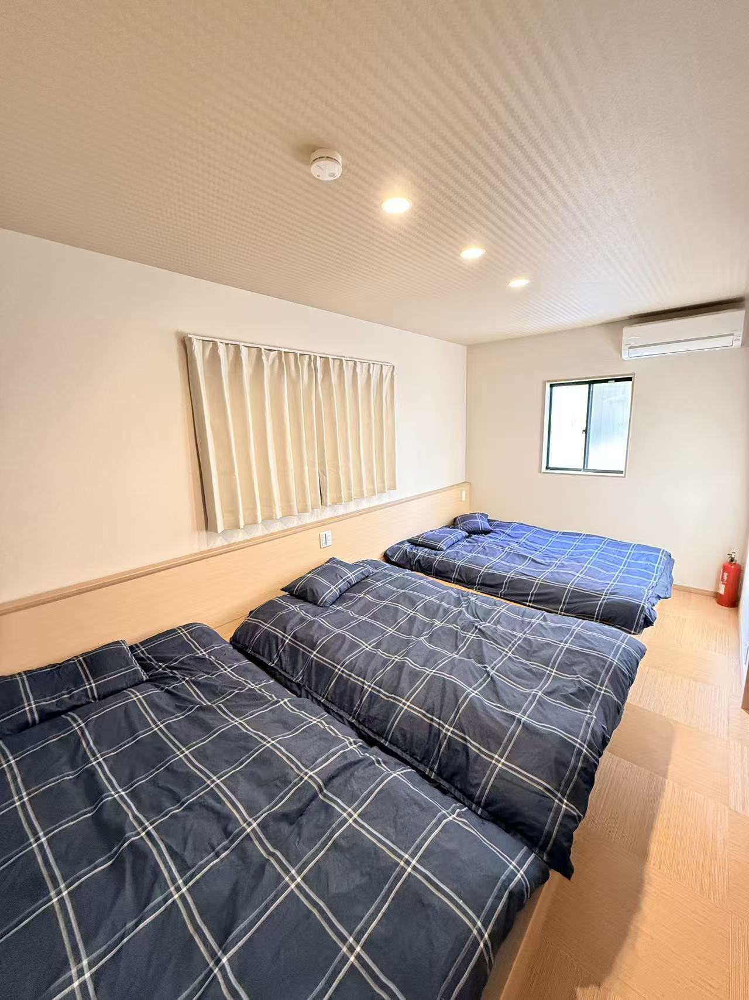
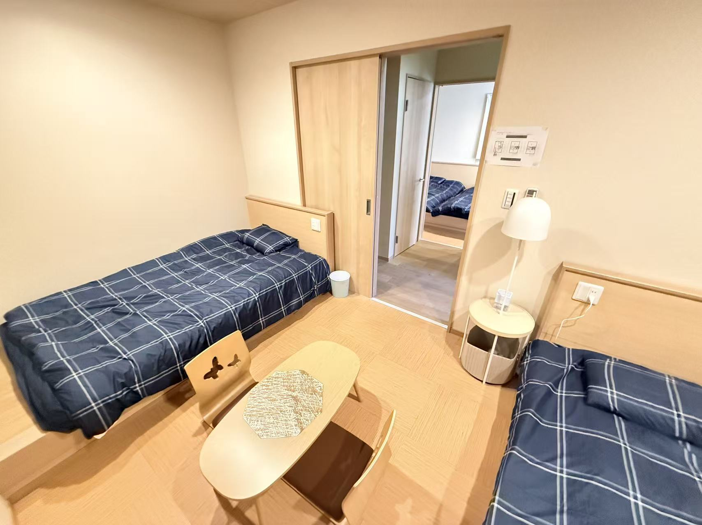
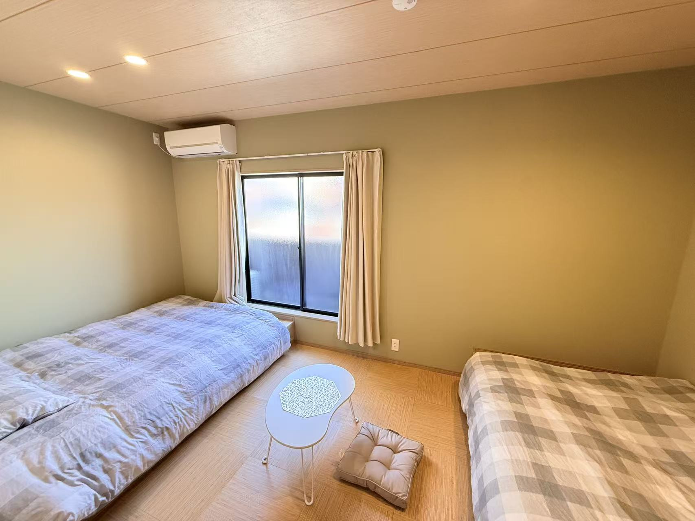
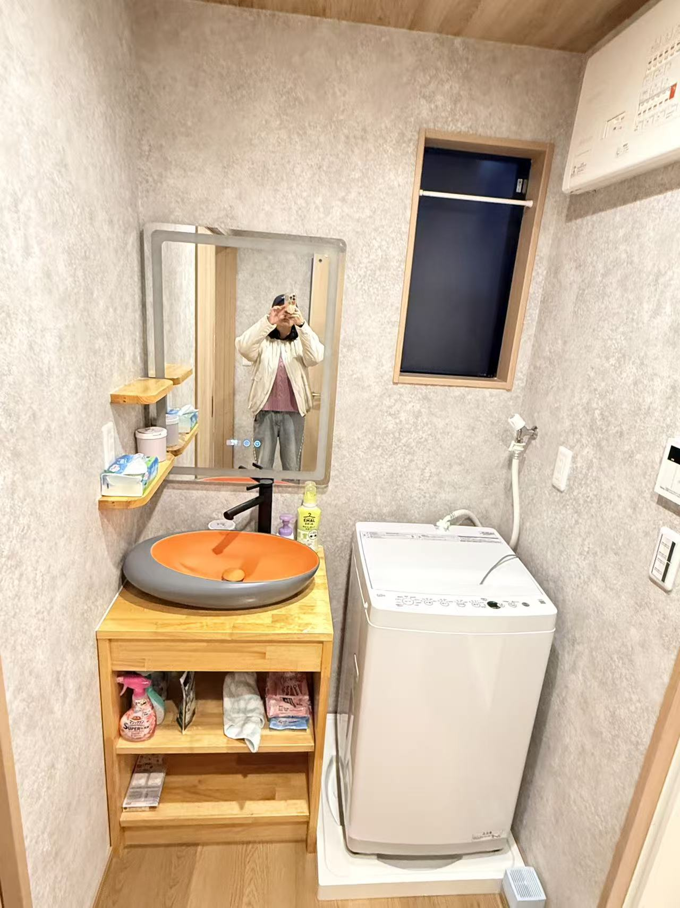
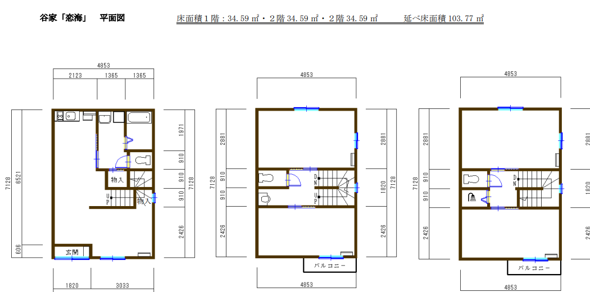

太子エリア
鄰近動物園前與新今宮。

Taishi 2 Minpaku
位於大阪市西成區太子エリア，動物園前站步行約 1 分，新今宮站步行約 7 分。大空間 3 層木造，適合多人住宿配置。
Quick Facts
不顯示詳細地址與售價，完整資料請以諮詢時提供為準。
鄰近動物園前與新今宮。
JR 新今宮可直達關西機場。
實測建物面積資料。
另有 2 個洗面台。
Gallery







Layout
Private Viewing
可先預約線上說明，確認區域條件、空間配置與參訪安排。
免費報名諮詢